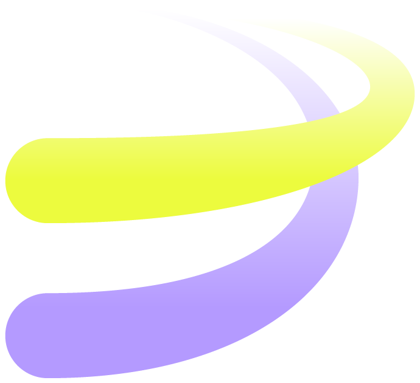
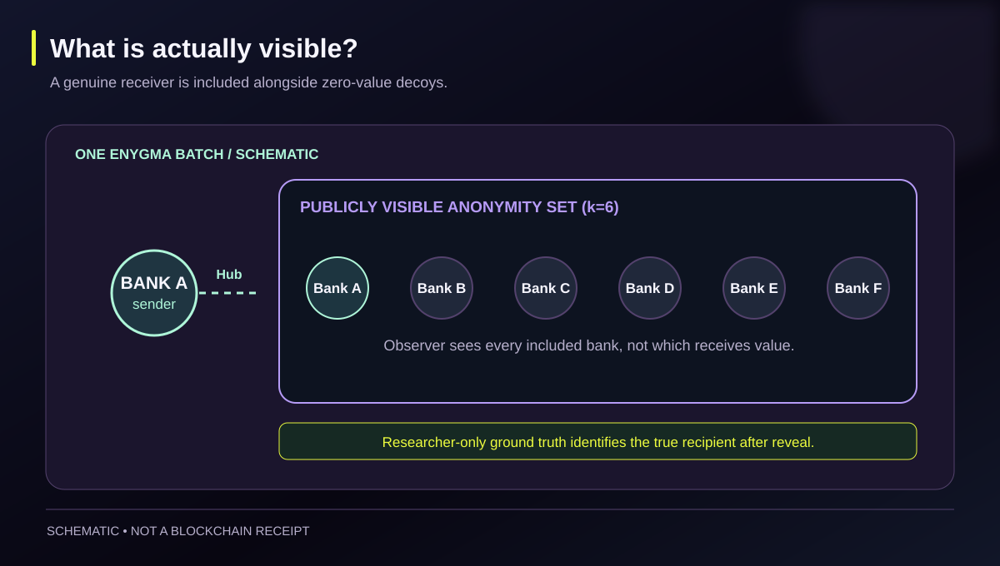
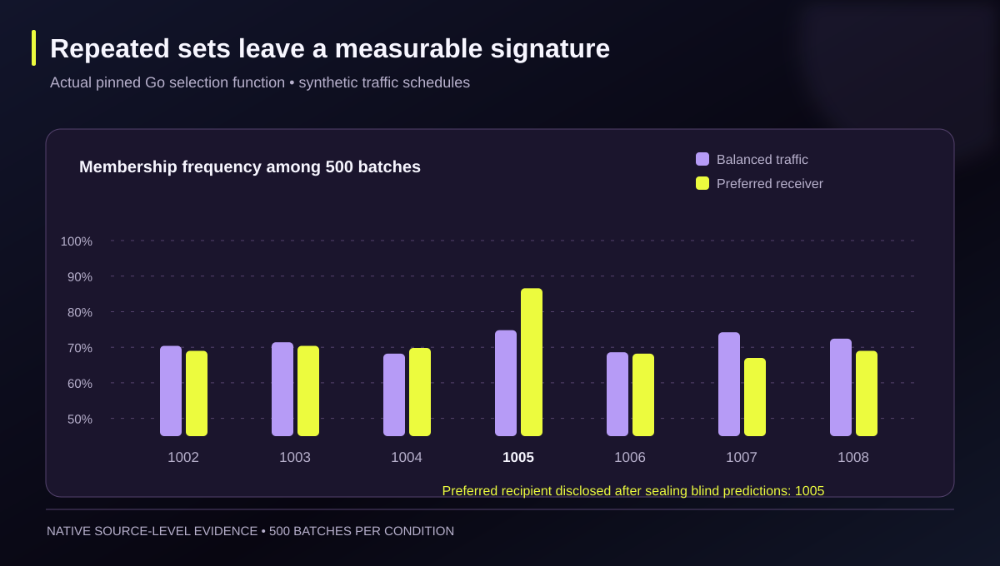
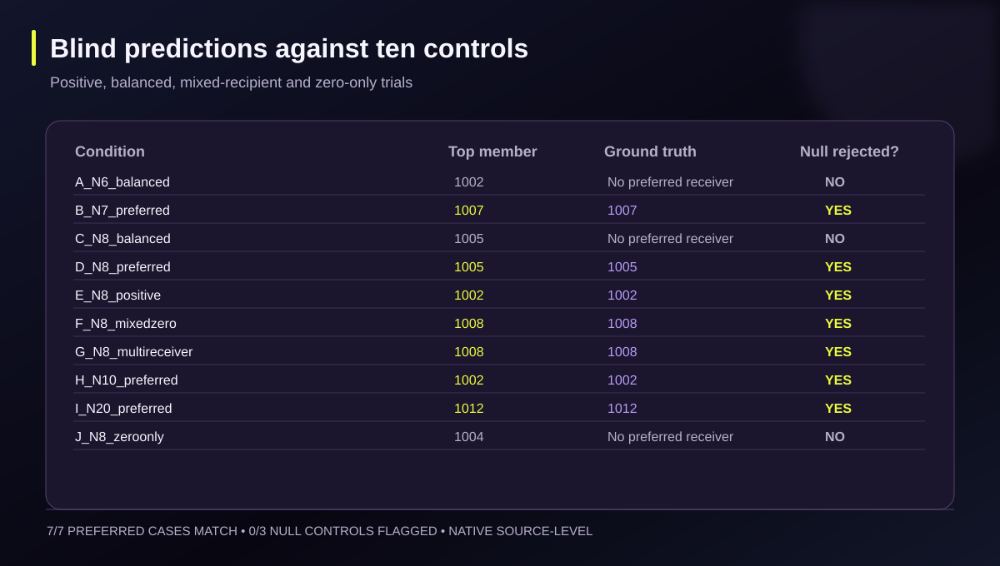
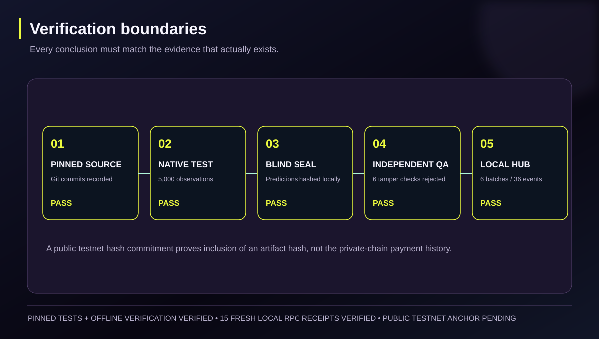
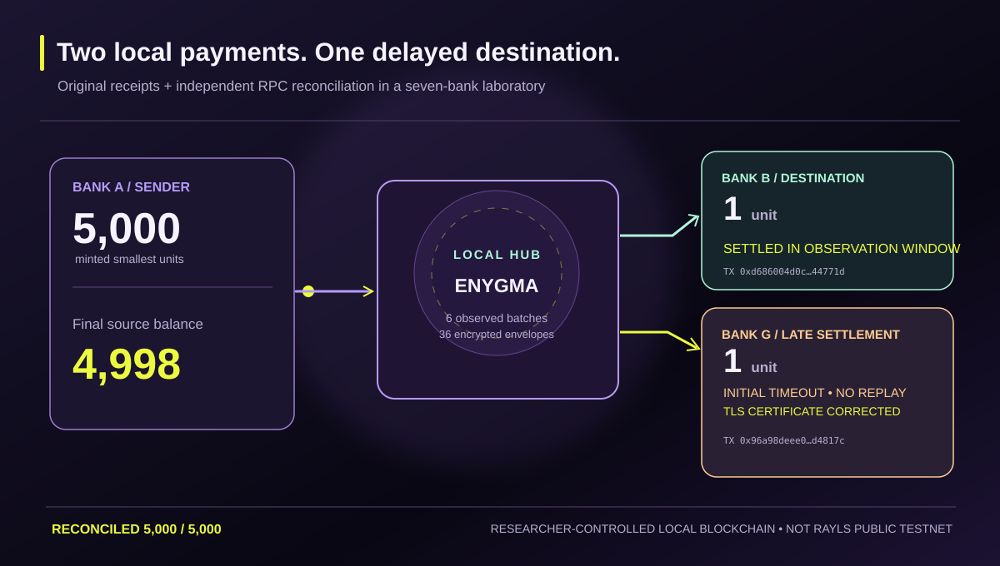
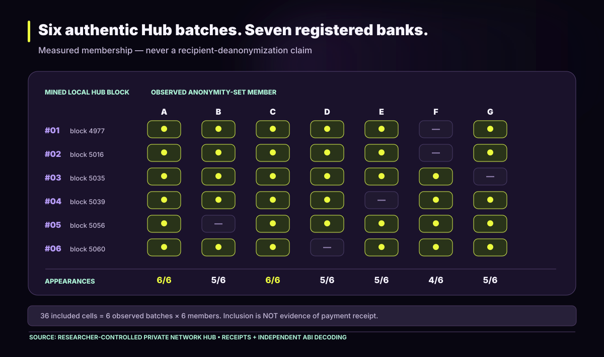

OBSERVATION
The sender is visible
Authorized Hub observers can identify the sending participant and the bank IDs inside each anonymity set. Individual receiver amounts are not visible to ordinary observers.

Rayls / EnygmaINDEPENDENT RESEARCH · 2026Single transactions conceal their receiver among decoys. Repeated public membership sets might tell a different story.
We tested Rayls' actual anonymity-set selection function across ten controlled traffic conditions, separating observer-visible data from hidden recipients and blind predictions from ground truth.
Current evidence: 5,000 native selections plus 6 mined local Hub anonymity-set batches. Public Testnet evidence commitments remain pending.
When more than six institutions are registered, the current Rayls relayer includes the sender and genuine receivers, then adds randomly selected zero-value participants until the set contains six banks. A frequent receiver can appear more often than a random decoy.
Authorized Hub observers can identify the sending participant and the bank IDs inside each anonymity set. Individual receiver amounts are not visible to ordinary observers.
For a sender repeatedly choosing one bank, membership frequency may increase above the balanced-traffic baseline if the network has more than six registered banks.
Balanced recipient schedules, six-member networks, and zero-only traffic must not be mislabeled as a reliable preferred-payee signal.
Scroll through the protocol illustration, then inspect the real native experiment data below. This 3D sequence illustrates the observer model—it is not a captured transaction.
These are actual outputs of the pinned Go selection function with synthetic schedules. The chart shows membership frequency, not a probability that a bank received money. Use the reveal switch to compare a blind inference with researcher-only ground truth.
Boundary of this result: Native source tests validate the selection mechanism. An institutional privacy finding on a functioning 7+ participant Hub requires authentic, independently checkable network observations.
The researcher-controlled seven-bank lab emitted actual EnygmaTransfer events on its Private Network Hub. Independent ABI decoding and fresh RPC queries confirmed six batches containing 36 encrypted transfer envelopes, with exactly six visible members per batch. Select a row to inspect the authentic local block and transaction hash.
A–G are local test institutions with chain IDs 12345–12351. Filled cells mean a bank appeared in the recorded set, not that it received money.
Local Hub evidence.
These are real mined transactions on our isolated Rayls test environment. They are not Rayls Public Testnet transactions and do not establish independent third-party consensus or a successful real-world deanonymization attack. Six batches cannot statistically validate the longitudinal receiver-inference hypothesis by themselves.
A→B settled inside the observed interval. A→G first timed out because the new bank's CTS TLS server certificate lacked its hostname; after correcting the certificate, the relayer caught up and the original payment settled without another source transfer. The final balances reconcile to 5,000/5,000 smallest units. The initial timeout remains a recorded failed timing criterion.
These original vector illustrations are generated from source-level measurements, actual local Hub receipts and verified balances. They clearly distinguish schematics from mined transaction evidence.






The research release preserves the native observer ledger, its separately sealed ground truth and predictions, real local-chain receipts, decoded Hub events and integrity tests. Official Git revisions are pinned; local-chain evidence is never presented as independent external consensus.
Local-chain receipts are distinct from the public Testnet hash anchor. The archive-root commitment is retrospective, recorded after the experiments. Inspect public Testnet commitment
python3 qa/check_manifest.py
python3 qa/verify_local_live.py --check-only
python3 qa/verify_public.py
python3 qa/adversarial_checks.py
python3 analysis/analyze_public.py \
--observer evidence/native/hub_observer_only.csv \
--metadata evidence/native/native_scenario_metadata.json \
--output analysis/recomputed_blind_predictions.json
# Native test requires Go 1.26+ and the pinned Rayls relayer checkout.
# This replays the algorithm, not the original random sample byte-for-byte.Across seven preferred-recipient conditions, the largest membership-frequency candidate matched the hidden preferred bank. None of three pre-registered null controls triggered the family-wise significance decision. This supports a source-level privacy hypothesis, not a claim that production payments have been deanonymized.